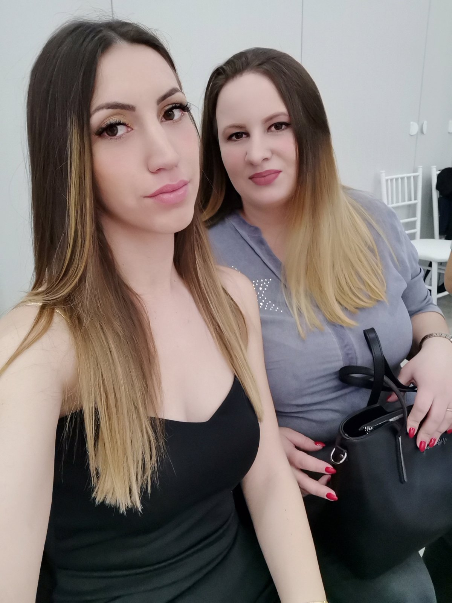
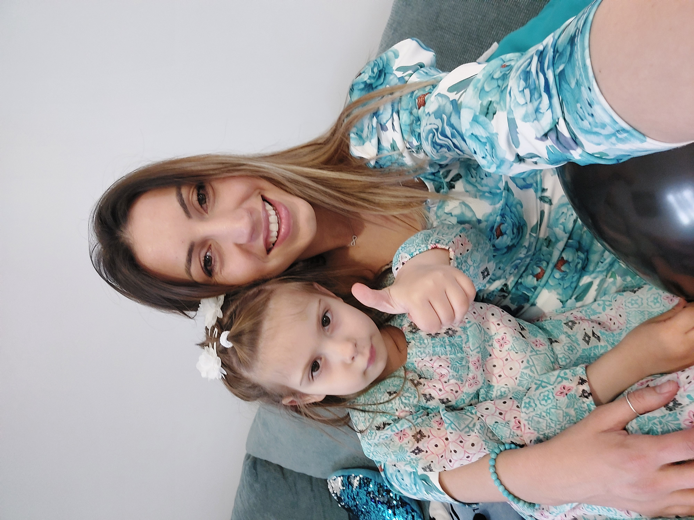
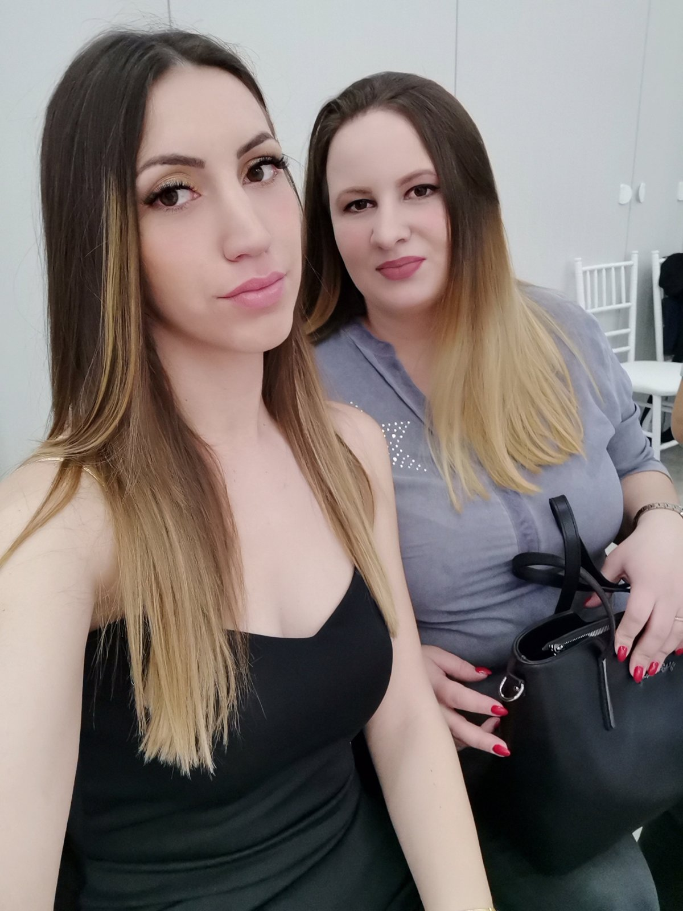
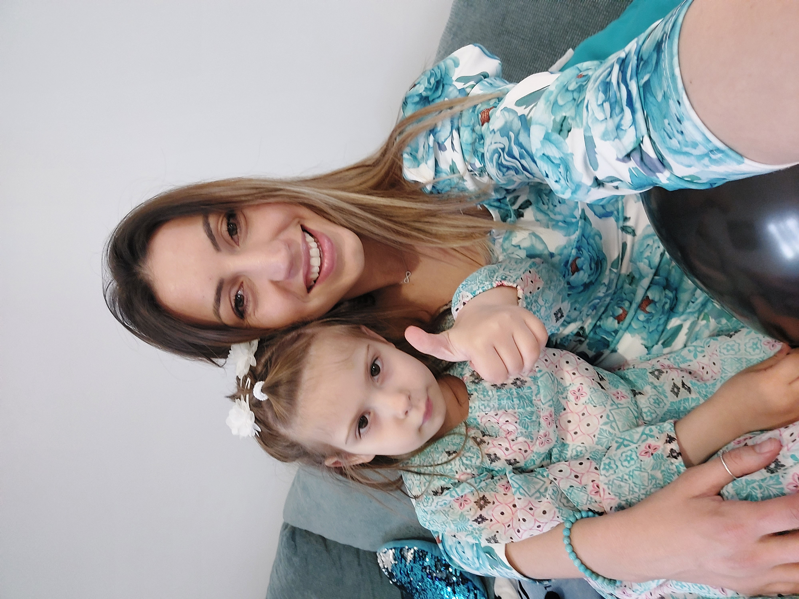

Dan po dan, kolač po kolač, kažu da smo postale pravi stručnjaci u pravljenju slatkiša. Nemamo neku tajnu, samo nam valjda ide od ruke jer nam je zanimljivo. Najviše smo počele praviti kolače iz dosade, jer smo imale dovoljno slobodnog vremena i iskoristile smo na taj način. Zašto Dve i po domaćice ? Te godine, rodila se Mila, koja je sa nama provodila vreme u kuhinji dok smo pravile kolače, i nikako ne bismo smele da je izostavimo iz tima. Kada može "Dva i po muškarca",onda mogu i "Dve i po domaćice". :D Smišljale smo dugo drugi naziv ali ipak ovaj je autentičan i najbolji.